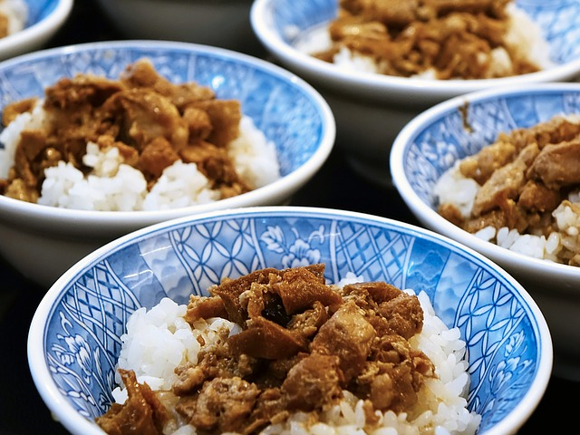
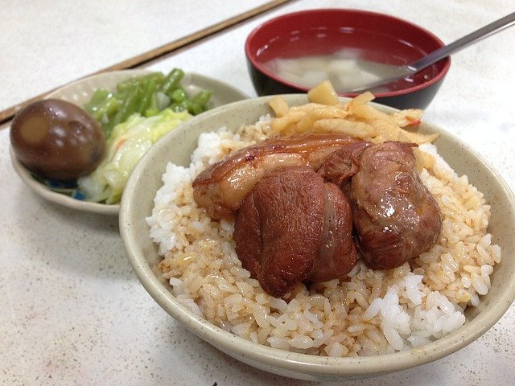

滷肉飯
滷肉飯是臺灣流行的一道豬肉丁飯菜餚。滷肉飯的特色和製作的關鍵部分在於肉醬和肉汁,在台南、台中、台北的製作方法和特點均有差異。「滷肉飯」大多是使用滷五花肉塊,而「魯肉飯」或「肉燥飯」才大多是使用滷肉碎。趕快來吃吃看吧!

大腸包小腸
大腸包小腸是台灣一種小吃,俗稱台式熱狗,發源於台灣花蓮的客家人出門工作時的點心,於九十年代開始在台灣夜市流行,並在現在成為台灣普遍的美食。在許多景點常有小攤販與客人以骰子對賭,故有句俗諺曰「黑無腸,白無腸,大腸包小腸」。趕快來吃吃看吧!

爌肉飯
爌肉飯是一種以白飯佐以燉煮豬肉的米食。配菜則以醃菜類及筍絲為主,飯內或灑肉燥。所謂的控肉是指將大塊豬五花肉以醬油、糖及香料等材料,用小火煮至熟軟滷製而成的肉,其他部位的豬肉塊則有其他名稱。喜歡控肉飯的朋友們趕快來吃吃看吧!